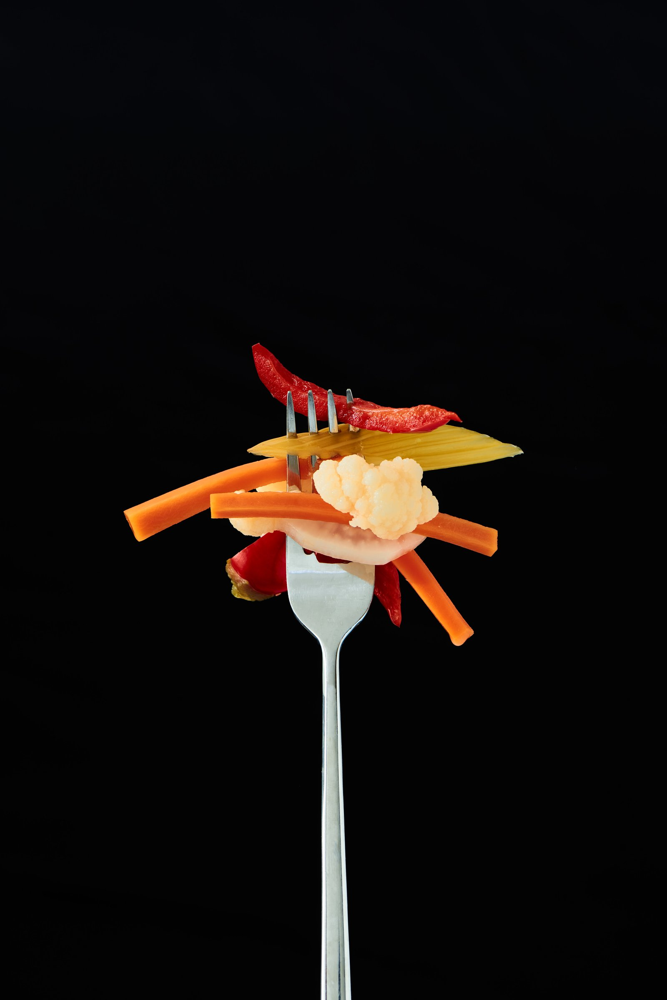
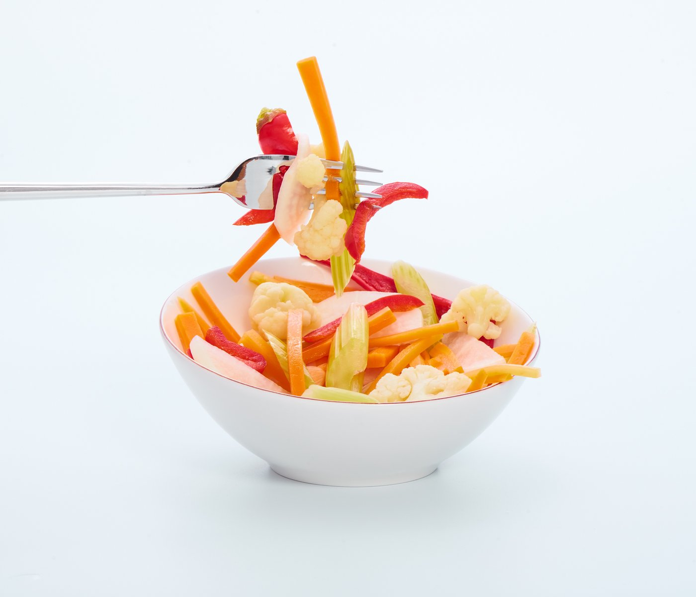
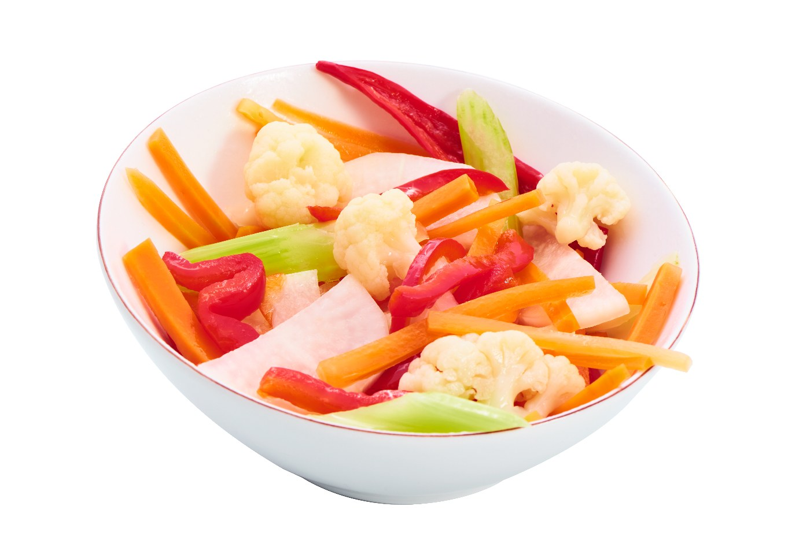
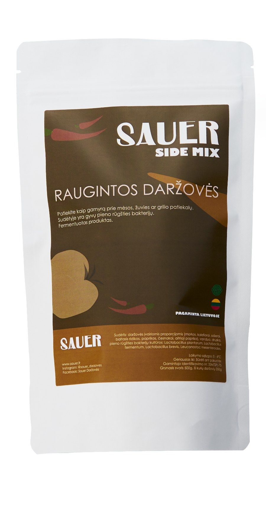
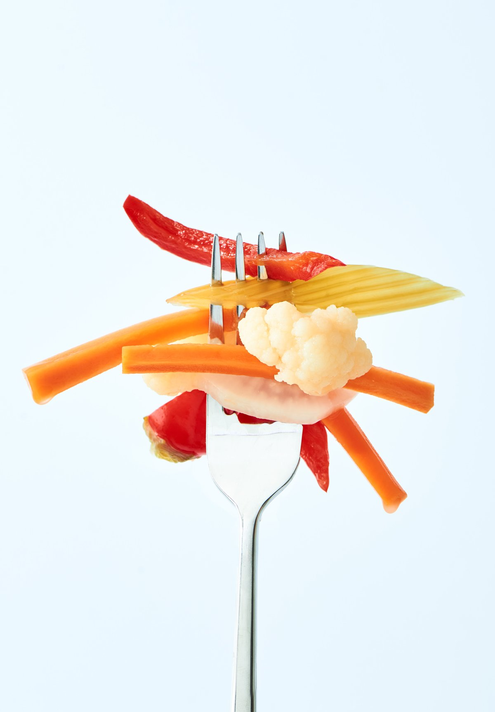

Sauer – tai fermentuotos daržovės, sukurtos tam, kad paprastą patiekalą paverstų įdomesniu. Traškios, rūgštelėjusios ir kupinos skonio – jos tampa tuo akcentu, kurio kartais trūksta lėkštėje.
Dėkite šalia mėsos, žuvies ar grilio patiekalų, naudokite burgeriams, sumuštiniams, salotoms arba tiesiog valgykite vienas.

Nors pirmas derinys, kuris ateina į galvą, yra mėsa ir raugintos daržovės, Sauer gali keliauti kur kas toliau.
Tai senas, laiko patikrintas daržovių fermentavimo būdas, suteikiantis joms išskirtinį skonį ir charakterį. Sauer daržovės fermentuojamos pieno rūgšties bakterijų kultūromis – fermentacijos metu daržovės įgauna malonią rūgštelę, išraiškingesnį skonį ir išlieka traškios.
Apie procesą
Morkos, kalafiorai, salierai, baltasis ridikas, paprikos, česnakai ir aitrioji paprika sūryme.


Sauer daržovės rauginamos su pieno rūgšties bakterijų kultūromis, kurios užtikrina teisingą bakterijų veiklą ir pastovų skonį. Rankų darbo produktas, pagamintas Lietuvoje.
Užsakymai Instagram arba Facebook platformoje asmenine žinute. Parašyk – suderinsime kiekį, atsiėmimą ar pristatymą bei galutinę sumą.
Rašyti Instagram @sauer_darzoves Nemokamas atsiėmimas suderintu laiku · Pristatymas Kaune ir VilniujeDaržovės įvairiomis proporcijomis (morkos, kalafiorai, salierai, baltasis ridikas, paprikos, česnakai, aitrioji paprika), vanduo, druska, pieno rūgšties bakterijų kultūros: Lactobacillus plantarum, Lactobacillus fermentum, Lactobacillus brevis, Leuconostoc mesenteroides.
Rauginama su pieno rūgšties bakterijų kultūromis – teisinga bakterijų veikla ir pastovus skonis. Rankų darbo produktas.
Užsakymas laikomas patvirtintu, kai SAUER patvirtina produkto kiekį, atsiėmimo arba pristatymo būdą ir galutinę užsakymo sumą.
Raugintos daržovės – tai ne nauja mada. Tai senas, laiko patikrintas daržovių fermentavimo būdas, suteikiantis joms išskirtinį skonį ir charakterį. Ir labai lengva priderinti prie kasdienio maisto.
Nerandi atsakymo? Rašyk mums Instagram — atsakome per darbo dieną.